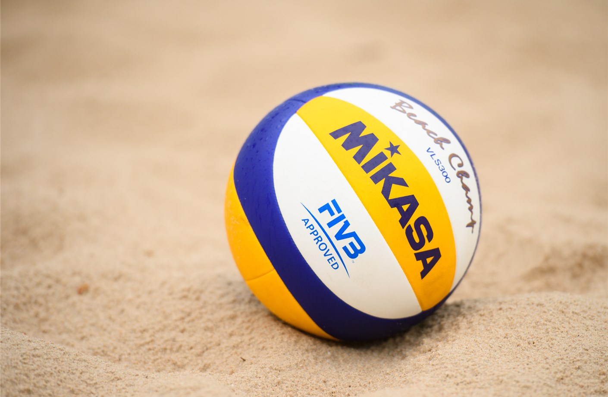
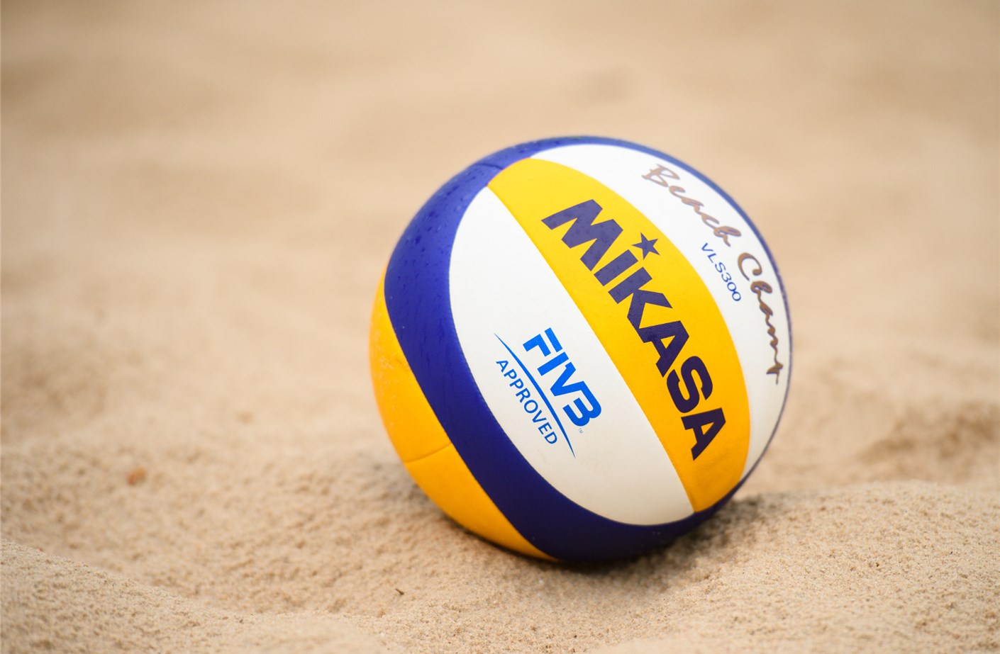

About
I am an Engineering Physics student with high interest in software development and robotics; specifically in developing technologies to tackle contemporary global issues
Engineering Physics
- Engineering Physics is a combination of software, electrical and mechanical engineering coupled with the fundamentals of physics and mathematics.
- Does a broad-based program mean lack of depth?
- No! To accommodate for the breath we have to take a minimum of 177 credits during the program. From which, a lot of the classes are specialized design courses. Moreover, we have additional opportunity to gain depth through co-op and the technical electives of our choice.
- Why did I choose it?
- I am very interested in robotics and firmware, in which there is a lot of interplay of mechanical, electrical and software components. Engineering physics provides me the perfect background to gain insight into all the different fields and work effectively in multidisciplinary teams. Moreover due to the sheer volume of content we need to learn, my program made me a fast and independent learner, ready to take on any new challenges!
Software Concentration
(refer to the Project Section for a comprehensive list of all my projects)
I tried to gain as much depth in software development as I could! My focus was to build a strong base and apply my skills to solve novel issues. Below are some ways I gained experience
- Internships
- (more detailed in the Work Experience Section)
- I worked in software roles for 4 different companies, for 4-7 months, and now I am working part-time as a Firmware Developer for Reliable Controls
- Projects in Engineering Physics
- This program is packed with project based courses, including two capstone projects and a full summer dedicated to building an autonomous robot
- Exchange Program: Denmark Technical University (DTU)
- During my exchange term I enrolled in 6 software related courses, ranging from fundamental computer science courses to masters level software courses. Many of them had interesting projects that allowed me to gain in depth knowledge in the area
- Student Design Team
- I am a founding member of UBC Bionics and worked as a the software lead for a year. I was also an R&D member of the Music to Movement project at UBC Biomedical Engineering Student Team (BEST)
Technical Skills


Work Experience
May 2021 - Present
Reliable Controls
Victoria, BC, Canada
Firmware Developer
- Add features, bug fixes and unit tests, in C++, in preparation of future releases of the different programmable controllers used for green building applications
- Collaborate with 15 other team members, using JIRA and BitBucket, to update the main BACnet protocol code base and also the windows and linux device targets
- Write python scripts to automatically fix 7000+ lint warnings of different types across the code base, to improve the code quality and structure
May 2019 - August 2019
Broadcom Corporation
Richmond, BC, Canada
Applications Engineer
- Performed quality checks and analyzed nightly regression tests (NRT) on different features on Linux-based PCIe Storage Adapter
- Wrote scripts to automate various tests, in python, and collaborated with other members using Git, Gerrit and JIRA
- Wrote python/bash tests and debugged various issues in SoCs connected to Linux boxes via TCP
June 2020 - December 2020
Chan Zuckerberg Biohub
San Francisco, CA, USA
R&D Engineer (Software Focus)
- Worked as the software team member for two different robotic projects
- Designed and wrote an entire software package (czfacsautomation) using python and C++ to carry out the entire automation process from start to end
- Designed a highly flexible and intuitive GUI for biologists to effectively use this, in house, muti-mode and multi-route liquid chromatography device
January 2018 - May 2018
Vancity Credit Union
Vancouver, BC, Canada
Software Developer
- Received a 3-day training on Agile Development and worked in two scrum teams to develop production quality software
- Developed a data migration application in C# to transfer 1tb files to an online server and save $1000 of yearly licensing fees. Collaborated with other members via TFS
- Developed a Data Quality Repository App by creating a relational database in SQL and connecting it to an app created in C#, to record and track all IT data quality issues


 


{kind=link}
{kind=link}